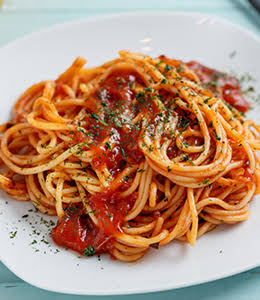

Pasta al Ajo y Mantequilla

La pasta al ajo y mantequilla es una receta clásica que demuestra que no hacen falta muchos ingredientes para conseguir un plato delicioso. Es económica, rápida y perfecta para una cena ligera o cuando el tiempo es limitado.